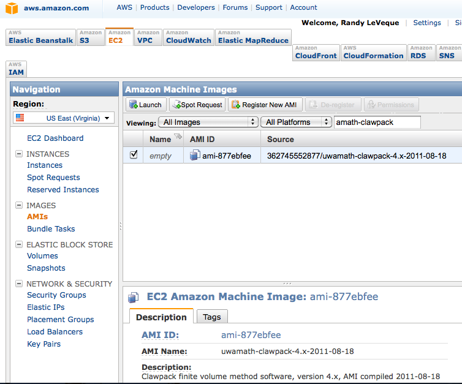
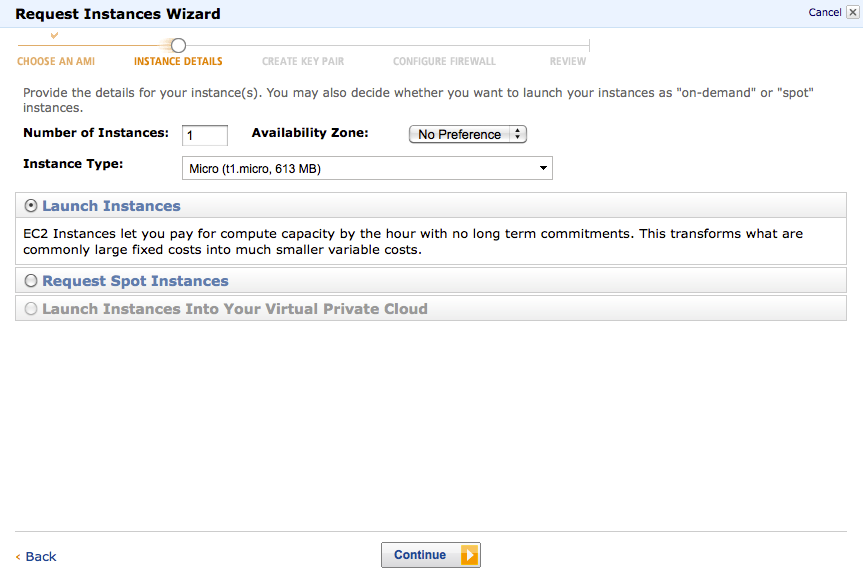
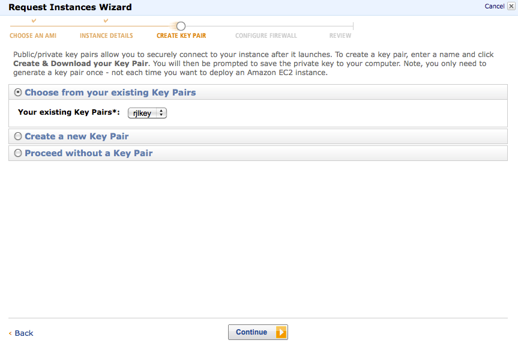
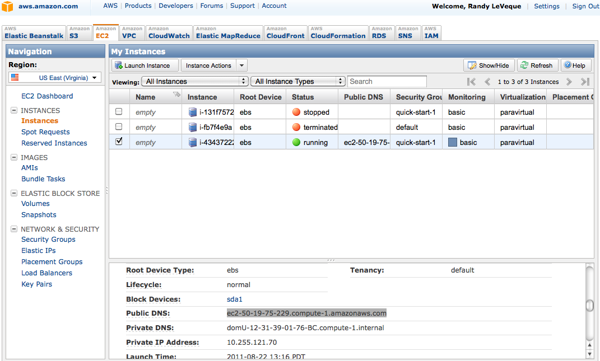
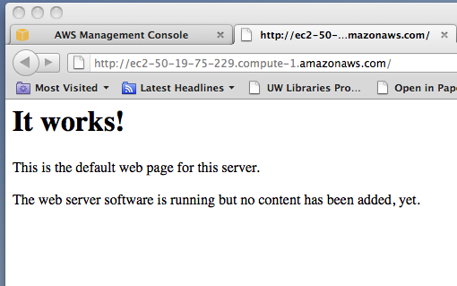

Amazon Web Services EC2 Clawpack AMI¶
Warning
This has not been updated for Clawpack-5 yet, but it should still work if you start up an instance as described below and then install Clawpack-5 by following the Installing Clawpack.
To run Clawpack in the Cloud using Amazon Web Services Elastic Cloud Computing (EC2), first sign up for an account. Note that you can get 750 hours free micro instance usage (which may be sufficient for many things) in the free usage tier.
For general information and a guide to getting started:
Getting started with EC2, with tutorial to lead you through an example (a similar tutorial geared to Clawpack is included below).
Pricing. Note: you are charged per hour for hours (or fraction thereof) that your instance is in running mode, regardless of whether the CPU is being used.
Finding the Clawpack AMI¶
Once you have an AWS account, sign in to the management console and click on the EC2 tab, and then select Region US East (which has cheaper rates) and click on AMIs on the menu to the left.
Change Viewing: to All Images and All Platforms and then after it has finished loading the database start typing uwamath-clawpack in the search bar. You should find at least one AMI, as shown in this screen shapshot:
{kind=link}
Launching an instance¶
Select the Clawpack image and then click on the Launch button on this page to start launching an instance based on this AMI. This means a virtual machine will be started for you, initialized with this disk image (which is a Ubuntu linux distribution with Clawpack and its dependencies).
This should give a popup page that looks like this:
{kind=link}
Here you can select what sort of instance you wish to start (larger instances cost more per hour).
Click Continue on the next few screens and eventually you get to one that looks like:
{kind=link}
If you don’t already have a key pair, create a new one and then select this key pair here.
Click Continue and you will get a screen to set Security Groups. Select the quick-start-1 option. On the next screen click Launch.
Logging on to your instance¶
Click Close on the next page to go back to the Management Console. Click on Instances on the left menu and you should see a list of instance you have created, in your case only one. If the status is not yet running then wait until it is (click on the Refresh button if necessary).
Click on the instance and information about it should appear at the bottom of the screen. Scroll down until you find the Public DNS information, highlighted on the screenshot below:
{kind=link}
Go into the directory where your key pair is stored, in a file with a name like rjlkey.pem and you should be able to ssh into your instance using the name of the public DNS, with format like:
$ ssh -i KEYPAIR-FILE ubuntu@DNS
where KEYPAIR-FILE and DNS must be replaced by the appropriate things, e.g. for the above example:
$ ssh -i rjlkey.pem ubuntu@ec2-50-19-75-229.compute-1.amazonaws.com
Note:
You must include -i keypair-file
You must log in as user ubuntu.
Using Clawpack¶
Once you have logged into your instance, you are on Ubuntu Linux that has software needed for Clawpack pre-installed, including:
gfortran
Ipython, numpy, scipy, matplotlib
make
git
netcdf
apache web server
Other software is easily installed using apt-get install.
The current development version of Clawpack is installed in /claw/clawpack-4.x. If you want to use this version, you might want to:
$ cd /claw/clawpack-4.x
$ git fetch origin # bring over any recent changes
$ git merge origin/master # merge them in
$ python python/make_libs.py # compile libraries
The $CLAW variable is set to point to this version of Clawpack (in the .bashrc file).
Of course you could instead download a tar file of Clawpack and install following the instructions at Installing Clawpack. At any rate, see that section for instructions on what to do next if you are new to Clawpack.
Warning
If you want to use Clawpack-5, instead follow the Installing Clawpack.
Viewing plots of results¶
If you run Clawpack on your instance then you will probably want to view the results. There are at least three possible approaches (see Plotting with Visclaw for general information about plotting in Clawpack):
If you are on a computer that supports X windows and you add the -X flag to your ssh command, then you should be able to plot interactively (see Interactive plotting with Iplotclaw). Response may be pretty slow, however.
If you create plots using
$ make .plots
then you will have a directory (named _plots by default) that contains .png figures and .html files for viewing them. You can tar this directory up and transfer it to your local machine using sftp, and then view locally.
Note that the plot files are often much smaller than the Fortran output files in _output, and so much quicker to transfer.
You can view the plots directly using a web browser as explained in the next section.
Viewing webpages directly from your instance¶
If you use
$ make .plots
to make a set of plot files and html files for viewing them, you can view them directly by opening a web browser to an appropriate path on your instance.
The apache webserver should already be running, but to allow people to view webpages you will need to adjust the security settings. Go back to the Management Console and click on Security Groups on the left menu. Select quick-start-1 and then click on Inbound. You should see a list of ports that only lists 22 (SSH). You want to add port 80 (HTTP). Select HTTP from the drop-down menu that says Custom TCP Rule and type 80 for the Port range. Then click Apply Rule Changes. This should give something like the next screen shot:

Now you should be able to point your browser to http://DNS where DNS is replaced by the Public DNS name of your instance, the same as used for the ssh command. So for the example above, this would be
`http://ec2-50-19-75-229.compute-1.amazonaws.com`.
You should see this page:
{kind=link}
The page being displayed can be found in /var/www/index.html on your instance. Any files you want to be visible on the web should be in /var/www, or it is sufficient to have a link from this directory to where they are located (created with the ln -s command in linux).
So, for example, if you do the following:
$ cd /var/www
$ ln -s /claw/clawpack-4.x/apps ./apps
Then you should be able to see the apps directory in your web browser, which would be at
http://ec2-50-19-75-229.compute-1.amazonaws.com/apps/
for the above example. You will have to replace the DNS with that of your instance.
If you want to expose all of your home directory to the web:
$ cd /var/www
$ ln -s /home/ubuntu ./home
Transferring files to/from your instance¶
You can use scp to transfer files between a running instance and the computer on which the ssh key is stored.
From your computer (not from the instance):
$ scp -i KEYPAIR-FILE FILE-TO-SEND ubuntu@DNS:REMOTE-DIRECTORY
where DNS is the public DNS of the instance and REMOTE-DIRECTORY is the path (relative to home directory) where you want the file to end up. You can leave off :REMOTE-DIRECTORY if you want it to end up in your home directory.
Going the other way, you can download a file from your instance to your own computer via:
$ scp -i KEYPAIR-FILE ubuntu@DNS:FILE-TO-GET .
to retrieve the file named FILE-TO-GET (which might include a path relative to the home directory) into the current directory.
Stopping your instance¶
Once you are done computing for the day, you will probably want to stop your instance so you won’t be charged while it’s sitting idle. You can do this by selecting the instance from the Management Console / Instances, and then select Stop from the Instance Actions menu.
You can restart it later and it will be in the same state you left it in. But note that it will probably have a new Public DNS!
Creating your own AMI¶
If you add additional software and want to save a disk image of your improved virtual machine (e.g. in order to launch additional images in the future to run multiple jobs at once), simply click on Create Image (EBS AMI) from the Instance Actions menu.